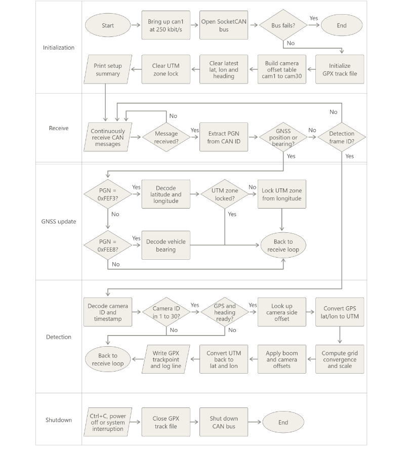
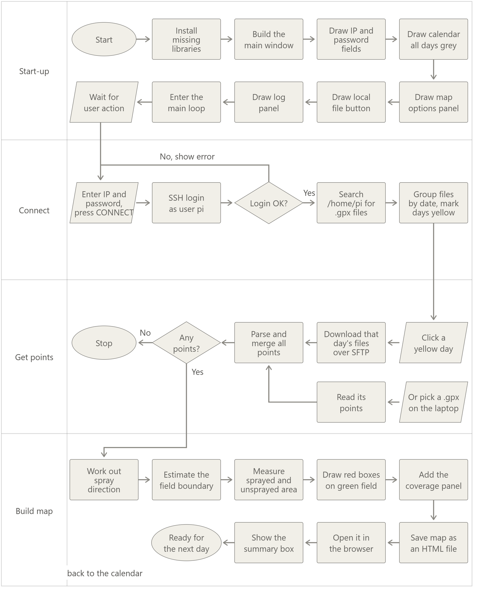

Feedback map generation
Mapped the cameras' detections and the spray applications triggered by them: every detection and the matching nozzle application are tagged with their GPS RTK position and plotted over the field, so the map shows what was detected and where product was applied.
On-the-go mapping ECU
Electronic control unit for live mapping: developed an ECU that generates detection and application maps on the go, listening to the ISOBUS network and managing its different data streams (camera detections, nozzle states, GNSS position, machine speed) to log what was detected and sprayed, and where.
Wireless access tool: built a companion tool that connects to the ECU wirelessly, retrieves the logged data and generates the feedback map automatically, with no cables or manual post-processing.
Code workflow

